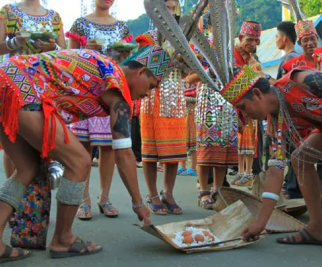
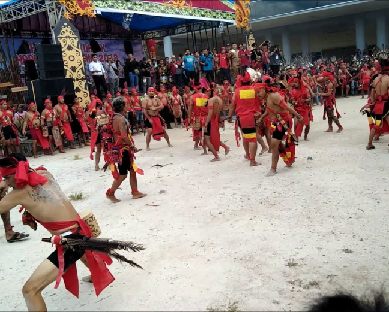
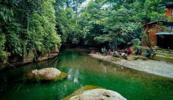
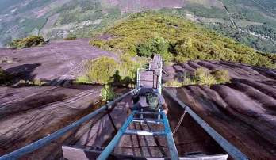
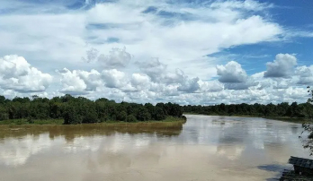
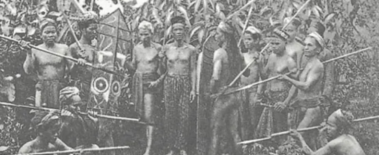
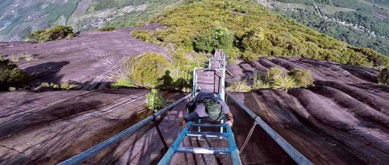
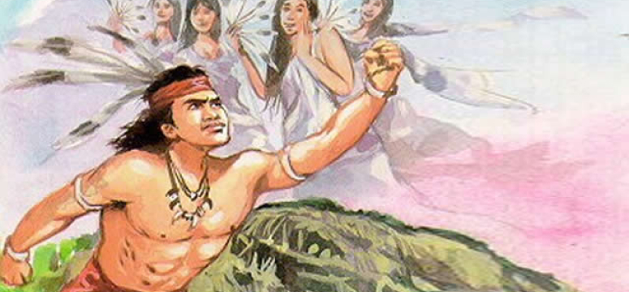
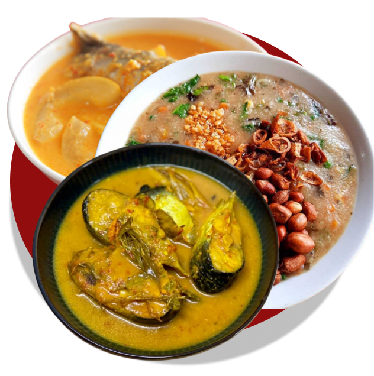
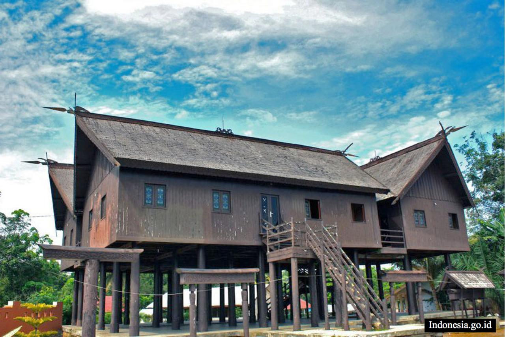

Suku Dayak adalah kelompok etnis asli yang mendiami bagian pedalaman pulau Kalimantan, Indonesia. Mereka merupakan salah satu kelompok pribumi yang memiliki keragaman budaya, bahasa, dan adat istiadat yang kaya. Suku Dayak
terdiri dari berbagai suku yang memiliki ciri khas dan identitas sendiri, seperti Dayak Ngaju, Dayak Iban, Dayak Kenyah, Dayak Punan, dan banyak lagi.
Sebagai kelompok pribumi Kalimantan, Suku Dayak memiliki sejarah yang panjang dan kaya. Tradisi dan budaya mereka seringkali terkait dengan kehidupan di hutan, mengandalkan pertanian, perikanan, dan pengetahuan tentang alam.
Seni, musik, dan tarian juga merupakan bagian penting dari kebudayaan mereka, dengan banyak upacara dan perayaan yang menunjukkan identitas dan hubungan mereka dengan alam dan roh.
Adat Istiadat
Adat istiadat suku
Dayak
ini adalah beberapa adat istiadat populer dan unik yang ada di Suku Dayak
Upacara Tiwah
Upacara tiwah
Suku Dayak
Upacara Tiwah merupakan sebuah perhelatan adat yang sangat berarti bagi Suku Dayak. Upacara ini memiliki tujuan utama untuk mengantar dan memberi penghormatan terakhir kepada roh orang yang telah berpulang.
Upacara Tiwah
Suku Dayak
Upacara Tiwah merupakan sebuah perhelatan adat yang sangat berarti bagi Suku Dayak. Upacara ini memiliki tujuan utama untuk mengantar dan memberi penghormatan terakhir kepada roh orang yang telah berpulang.
Melalui serangkaian ritual dan pementasan, upacara Tiwah menciptakan suasana yang penuh makna dan semangat bagi komunitas Dayak. Dalam prosesi upacara Tiwah, berbagai ritus, tarian, dan irama alat musik
tradisional Suku Dayak menjadi bagian tak terpisahkan.
Ritual ini adalah cara mereka menyampaikan doa dan harapan agar roh orang yang telah meninggal dijaga oleh roh para leluhur. Oleh karena itu, kesakralan upacara Tiwah sebanding dengan dua upacara yang telah
dijelaskan sebelumnya. Setelah doa dan harapan telah diungkapkan kepada roh para leluhur, barulah tulang-belulang orang yang telah meninggal akan ditempatkan dengan penuh kehormatan. Tempat ini dikenal sebagai
"Sandung," sebuah rumah kecil yang khusus dibangun sebagai tempat persemayaman. Selama upacara berlangsung, irama alat musik tradisional terus mengalun, menciptakan suasana yang khusyuk dan berfokus.
Upacara Manajah Anatang
Upacara Manajah Anatang
Suku Dayak
Upacara Manajah Antang memiliki peran yang signifikan dalam menghadapi situasi perang bagi Suku Dayak. Dalam konteks ini, upacara ini menjadi suatu langkah strategis untuk mendapatkan petunjuk yang penting terkait dengan
keberadaan musuh yang sulit terdeteksi.
Upacara Manajah Anatang
Suku Dayak
Upacara Manajah Antang memiliki peran yang signifikan dalam menghadapi situasi perang bagi Suku Dayak. Dalam konteks ini, upacara ini menjadi suatu langkah strategis untuk mendapatkan petunjuk yang penting
terkait dengan keberadaan musuh yang sulit terdeteksi. Melalui rangkaian upacara ini, Suku Dayak berharap dapat mengungkap keberadaan musuh yang selama ini disembunyikan. Salah satu aspek kunci dari upacara
Manajah Antang adalah panggilan kepada roh-roh leluhur melalui burung Antang.
Burung ini dianggap memiliki kemampuan untuk memberikan petunjuk berharga kepada komunitas, dan dalam upacara ini, mereka diharapkan
memberi tahu di mana musuh berada. Selain menjadi alat strategis dalam konteks perang, upacara Manajah Antang juga memiliki dimensi spiritual yang dalam, memperkuat hubungan antara manusia dengan roh-roh leluhur
serta alam sekitar.


Upacara Tariu
Upacara Tariu
Suku Dayak
Upacara Tariu adalah salah satu upacara adat yang dilakukan oleh Suku Dayak di Kalimantan. Tariu merupakan ritual atau perayaan yang diadakan oleh Suku Dayak untuk menghormati roh-roh leluhur dan alam. Upacara Tariu
biasanya diadakan pada waktu yang telah ditentukan dalam tradisi Suku Dayak, dan tujuannya adalah untuk meminta berkah, keselamatan, dan hasil panen yang melimpah.
Upacara Tariu
Suku Dayak
Upacara Tariu adalah salah satu upacara adat yang dilakukan oleh Suku Dayak di Kalimantan. Tariu merupakan ritual atau perayaan yang diadakan oleh Suku Dayak untuk menghormati roh-roh leluhur dan alam. Upacara
Tariu biasanya diadakan pada waktu yang telah ditentukan dalam tradisi Suku Dayak, dan tujuannya adalah untuk meminta berkah, keselamatan, dan hasil panen yang melimpah. Dalam upacara Tariu, Suku Dayak biasanya
mengenakan pakaian adat dan menghiasi diri dengan ornamen tradisional. Mereka melakukan tarian khas yang disertai dengan nyanyian dan musik
tradisional. Tarian ini memiliki makna spiritual yang dalam dan melibatkan keselarasan dengan alam dan roh-roh leluhur. Selama upacara Tariu, juga dilakukan berbagai ritual dan pengorbanan sebagai wujud
penghormatan kepada roh-roh leluhur dan alam. Orang-orang Suku Dayak percaya bahwa dengan melakukan upacara ini dengan sungguh-sungguh, mereka akan mendapatkan berkah dan perlindungan dari roh-roh leluhur serta
keselamatan bagi komunitas mereka. Upacara Tariu tidak hanya merupakan perayaan keagamaan, tetapi juga menjadi sarana mempertahankan identitas budaya dan mengenang warisan leluhur. Melalui tarian, nyanyian, dan
ritual, Suku Dayak menjaga tradisi dan nilai-nilai leluhur tetap hidup dalam kehidupan modern.
Legenda
Legenda Suku
Dayak
ini adalah beberapa adat legenda yang populer dan unik yang ada di suku dayak
Asal Muasal
Sungai Landak

Di sebuah desa, tinggallah sepasang suami istri. Setiap hari mereka bekerja sebagai petani palawija. Walaupun hidup sangat sederhana, mereka selalu bersedia membantu para tetangga sebisa mereka.
Kisah Bujang
Beji

Bujang Beji bermaksud menggunakan puncak Bukit Batu di Nanga Silat, Kapuas Hulu untuk menyumbat Sungai Melawi. Dengan kesaktiannya, ia memotong puncak Bukit Batu tersebut dan membawanya menggunakan tujuh lembar daun ilalang.
Pasukan
hantu
Pada masa penjajahan, pasukan Belanda sangat superior ketimbang pasukan tanah air, khususnya Suku Dayak. Hal ini karena Belanda mempunyai senjata yang memadai untuk melakukan peperangan dan intimidasi.
Legenda Pulau
Nusa

Alkisah, dahulu kala ada seseorang bernama Nusa yang tinggal di sebuah desa, di tepi Sungai Kahayan. Di desa itu, Nusa hidup bersama istri dan adik iparnya.
Asak Muasal
Sungai Landak
Di sebuah desa, tinggallah sepasang suami istri. Setiap hari mereka bekerja sebagai petani palawija. Walaupun hidup sangat sederhana, mereka selalu bersedia membantu para tetangga sebisa mereka. Suatu malam, sang suami
tidak bisa tidur karena hatinya sangat gelisah. Ketika ia menoleh kepada istrinya yang sedang tertidur pulas, ia sangat terkejut. Seekor lipan yang tubuhnya bersinar putih keluar dari kepala istrinya. Lipan itu merayap
turun dan keluar dari rumah. Merasa penasaran, sang suami mengikuti ke mana lipan itu pergi. Lipan masuk ke sebuah lubang kecil di dekat rumahnya dan tidak keluar-keluar lagi. Keesokan paginya, sang suami menceritakan
kejadian aneh itu kepada istrinya. Cerita Dongeng Rakyat Dari Kalimantan Barat “Ibu pun semalam bermimpi aneh Pak. Ibu seperti berada di dekat sebuah danau. Tiba-tiba, ibu melihat sekor landak raksasa di tengah danau.
Landak itu berbulu kuning keemasan.
Apakah mimpiku ini ada hubungannya dengan yang Bapak lihat semalam? Mungkin itu suatu pertanda baik, Pak. Bagaimana kalau kita tengok saja lubang tempat lipan itu bersembunyi?” usul istrinya. “Benar juga, marl kita
dekati lubang itu,” ujar suaminya. Suami istri ini pun mendekati lubang tempat lipan itu menghilang. Sang suami merogohkan tangannya ke dalam lubang. la merasakan tangannya menyentuh sesuatu, ditariknya benda tersebut.
Suami istri ini terkejut bukan main, benda yang didapat dari lubang tersebut adalah sebuah patung landak yang terbuat dari emas. “Kita bawa pulang saja patung landak ini, Pak. Siapa tahu membawa kebaikan untuk kita,”
kata sang istri. Patung landak itu pun mereka simpan dengan baik. “Jika kita jual patung landak itu, pasti kehidupan kita jauh lebih baik, Pak” ujar sang istri “Sabar Bu, kita simpan saja dulu. Siapa tahu ada petunjuk
tentang patung landak itu,” kata sang swami dengan tenang. Malamnya, petani itu bermimpi didatangi oleh seekor landak emas raksasa. “Tuan, biarkanlah aku tinggal bersamamu. Aku berjanji akan mengabulkan segala
permintaanmu,” kata landak itu. “Bagaimana caranya?” tanya sang swami. “Tuan cukup mengelus kepala patung landak itu dan meminta sesuatu, kemudian akhiri dengan mengelusnya lagi. Aku akan mengajarkan mantranya;” kata
landak raksasa. Landak raksasa itu mengucapkan mantra. Sang suami menghafalkannya dalam hati. Paginya, ia terbangun dan menceritakan hal tersebut kepada istrinya. Kemudian, petani itu mengusap kepala patung landak dan
mengucapkan mantra. “Berikanlah aku beras yang banyak,” kata petani itu yang kemudian menutupnya lagi dengan mantra. Ajaib, butiran beras mengalir deras dari mulut patung landak tersebut. Kemudian petani tersebut
mengulangi membaca mantra, kemudian meminta perhiasan dan kebutuhan pokok. Patung landak tersebut memenuhi segala permintaannya. Suami istri tersebut menjadi kaya raya. Mereka berbagi kepada semua tetangganya, sehingga
kehidupan kampung itu menjadi lebih balk. Kekayaan si petani memancing seorang perampok untuk datang mengintai. Akhirnya, perampok itu mengetahui dari mana datangnya kekayaan tersebut. Ia berhasil mengintip si petani
mengelus patung landak emas itu dan membaca mantra. Malam harinya, ia berhasil mencuri patung landak tersebut dan membawa ke desanya yang bernama Desa Ngabang. Desa tersebut sedang dilanda kekeringan. Bahkan, untuk
kebutuhan air yang pokok saja sudah tidak ada. Perampok tadi dengan bangganya mengumpulkan warga, “Tenang Saudara-Saudara. Aku akan menolong kallan dari kekeringan ini,” ujar sang perampok. Lalu, ia mengusap patung
landak itu dan membaca mantra seperti yang ia dengar di rumah petani. Seketika saja, air deras menyembur dari mulut landak. Warga bersuka cita. Namun, air tersebut terus saja mengalir deras membuat semua orang kewalahan.
Lama kelamaan air menggenangi desa. Perampok tersebut tidak bisa menghentikannya, karena ia tidak tahu mantra untuk menghentikan permintaannya kepada patung landak tersebut. Patung landak tersebut terus saja mengeluarkan
air. Akhirnya, Desa Ngabang tenggelam dan tidak bisa lagi menampung air, sehingga mengalirlah air keluar desa yang kemudian menjadi sebuah sungai besar. Oleh masyarakat setempat, sungai tersebut dinamai Sungai Landak.
Sungai Landak mengalir di tengah-tengah Kota Ngabang, Kabupaten Landak, Kalimantan Barat.
Pasukan
Hantu
Dalam sejarah, sejauh ini senjata populer yang dipakai oleh pasukan Indonesia ketika melawan pasukan Belanda adalah bambu runcing. Romantisme terhadap bambu runcing sangat kuat sehingga melupakan senjata lain yang tidak
kalah menarik untuk dibahas. Tepatnya di Pulau Kalimantan. Pulau terluas di Indonesia ini menyimpan kekayaan yang sampai sekarang masih dilestarikan oleh Suku Dayak. Pada masa Belanda, Suku Dayak melakukan perlawanan
dengan senjata khasnya, sehingga disebut sebagai pasukan hantu. Kisah senjata mematikan dan pasukan hantu di Suku Dayak inilah yang menarik untuk ditelisik lebih jauh. Berikut adalah ulasan lengkapnya.

Pada masa penjajahan, pasukan Belanda sangat superior ketimbang pasukan tanah air, khususnya Suku Dayak. Hal ini karena Belanda mempunyai senjata yang memadai untuk melakukan peperangan dan intimidasi. Namun, berbeda
ceritanya ketika Belanda masuk ke pedalaman Kalimantan. Di sana terdapat Suku Dayak yang jauh lebih ganas ketimbang pasukan Belanda. Pasukan Dayak Kalimantan memiliki senjata ampuh yang sangat mematikan. Senjata ini
sampai sekarang melegenda dan menjadi salah satu senjata yang ditakuti oleh pasukan Belanda. Senjata yang melegenda dan bisa memukul mundur pasukan Belanda tersebut adalah sumpit atau yang juga disebut sebagai damek.
Suku Dayak mempunyai senjata yang dikenal sebagai sumpit sebagai alat untuk berburu. Sumpit itu bukan sumpit biasa. Sumpit yang digunakan oleh pasukan Dayak sebagai senjata adalah sumpit beracun. Pasukan Dayak akan
mengolesi mata anak sumpit dengan getah pohon ipuh atau pohon iren yang beracun. Sumpit terbuat dari pohon kayu yang memiliki bentuk bulat dengan panjang yang mencapai 2 meter. Diameter batangnya 2 cm, dan diameter
lubang 1 cm. Sedangkan peluru sumpit (yang diolesi racun) terbuat dari bambu atau sejenis pohon palm tua. Senjata sumpit beracun milik Suku Dayak tidak hanya mematikan dengan racun. Akan tetapi juga membuat orang yang
terkena menjadi kejang-kejang dengan cara yang mengerikan. Orang yang terkena anak sumpit biasanya akan tewas dalam hitungan menit. Mereka akan kejang-kejang sambil mengeluarkan kotoran atau air kencing sebelum kemudian
tewas. Biasanya anak sumpit ini akan diarahkan ke leher target. Dengan begitu maka lawan akan tewas dengan cepat dan sadis. Pasukan yang disebut sebagai pasukan hantu di sini adalah Suku Dayak. Ada dua alasan mengapa
pasukan Suku Dayak ini sangat menakutkan dan mematikan sehingga disebut sebagai pasukan hantu. Pertama, Suku Dayak memiliki pemahaman tentang hutan yang sangat baik. Mereka adalah penduduk asli Kalimantan, sehingga
pasukan Dayak sangat lihai dalam menguasai medan peperangan. Kedua, pasukan Suku Dayak tentu saja memiliki senjata yang mematikan yaitu sumpit. Berkat kesenyapan dan kemampuan Suku Dayak dalam mematikan lawan, maka
pasukan tersebut cukup pantas jika dinamakan pasukan hantu. Berkat keganasan dan kengerian senjata yang dimiliki oleh Suku Dayak, maka masyarakat pedalaman Kalimantan bisa hidup dengan nyaman tanpa intervensi dari orang
asing. Kemampuan Suku Dayak dalam menyerang musuh dapat membuat pasukan Belanda tidak menyerang pedalaman Kalimantan. Mereka hanya ada untuk menguasai kota-kota besar.
Kisah Bujang
Beji
Dahulu, hiduplah dua orang pemimpin yang bernama Bujang Beji dan Tumenggung Marubai. Kedua orang ini mempunya sif at yang sangat bertolak belakang. Tumenggung Marubai adalah orang yang baik hati dan tidak sombong.
Sementara itu, Bujang Beji adalah orang yang sakti, tetapi serakah dan sombong. Keduanya mempunyai mata pencaharian sebagai pencari ikan dan mempunyai wilayah sendiri-sendiri. Tumenggung Marubai dan pengikutnya mencari
ikan di Sungai Simpang Melawi, sedangkan Bujang beji di Sungal Simpang Kapuas. Dongeng Rakyat Kalimantan Barat Kisah Bujang Beji Wilayah Sungai Simpang Melawi mempunyai banyak sekali jenis ikan, lebih banyak daripada
ikan-ikan di Sungal Simpang Kapuas. ltulah sebabnya, basil tangkapan Tumenggung Marubai selalu lebih banyak daripada Bujang Beji. Tumenggung Melawi menggunakan bubu atau sejenis perangkap besar untuk menangkap ikan.
Setelah terkumpul dalam perangkap, ia hanya memilih ikan-ikan yang besar, sementara ikan-ikan kecil dilepaskan kembali sehingga ikan-ikan di Sungal Simpang Melawi selalu berkembang biak dan tidak pernah habis.

Melihat hasil tangkapan Tumenggung Marubai, Bujang Beji merasa iri. la pun mencari cara mengalahkan Tumenggung Melawi. Lalu, ia menempuh cara yang kurang baik. la mulai menangkap ikan dengan cara menuba, yaitu meracun
ikan-ikan tersebut dengan tuba, yaitu sejenis racun ikan dari akar tumbuh-tumbuhan hutan yang sangat memabukkan. Pada awalnya, ia mendapatkan ikan yang sangat banyak. Lebih banyak dari hasil tangkapan Tumenggung Marubai.
Namun, karena cara yang digunakan adalah membunuh ikan-ikan dengan racun, lama-kelamaan ikan-ikan di sungai Simpang Kapuas menjadi sangat berkurang. Sementara itu, Tumenggung Marubai tetap mendapatkan banyak hasil
tangkapan. Ini membuat Bujang Beji menjadi semakin iri. “lni tidak bisa dibiarkan!” pikir Bujang Beji, “Harus ada cara supaya Tumenggung Marubai tidak mendapatkan banyak ikan.” Kemudian, Bujang Beji mulai berpikir keras.
la menemukan cara yang menurutnya terbaik. “Aku harus menutup aliran Sungai Melawi dengan sebuah batu besar di hulu sungai, dengan demikian ikan-ikan akan menetap di sana,” pikir Bujang Beji.
Bujang Beji bermaksud menggunakan puncak Bukit Batu di Nanga Silat, Kapuas Hulu untuk menyumbat Sungai Melawi. Dengan kesaktiannya, ia memotong puncak Bukit Batu tersebut dan membawanya menggunakan tujuh lembar daun
ilalang. Ketika sedang membawa bukit batu tersebut, tiba-tiba terdengar suara gadis-gadis sedang menertawakannya. Mereka adalah dewi-dewi di negeri khayangan. Ketika sampai di persimpangan antara Kapuas dan Malawi,
Bujang Beji melongok ke atas untuk melihat siapa yang menertawakannya. Tanpa sengaja, kakinya menginjak duri beracun hingga la melompat dan menjerit kesakitan. Akibatnya, tujuh lembar daun ilalang yang dipakainya
terputus. Puncak bukit batu tersebut pun terjatuh di sebuah aliran sungai yang disebut dengan jetak.

Bujang Beji sangat marah kepada dewi-dewi khayangan yang menertawakannya. “Aku akan membalas kalian!” teriaknya sambil menghentakkan kakinya yang tertusuk duri beracun di salah satu bukit di dekatnya. Kemudian, Bujang
Beji berusaha mengangkat Bukit Batu yang sudah terendam di jetak dengan cara mencongkelnya menggunakan sebuah bukit memanjang. Namun, karena bukit batu tersebut sudah melekat di jetak, usahanya tidak berhasil. Bukit
memanjang itu pun patah. Patahannya kini dinamakan Bukit Liut. Dengan demikian, gagallah usaha Bujang Beji menutup Sungai Melawi. Semua karena dewi-dewi khayangan. Aku akan membalas dendam,” kata Bujang Benji. Bujang
Benji merencanakan untuk menggapai negeri khayangan dengan menggunakan pohon kumpang mambu, yaitu sejenis pohon kayu raksasa yang ujungnya menjulang ke langit. la mulai menanam pohon kumpang mambu. Dalam beberapa hari
saja pohon tersebut sudah tumbuh tinggi sekali, sampai puncaknya tidak terlihat mata. Sebelum memanjat kumpang mambu, Bujang Beji melakukan ritual adat, yaitu memberi sesaji kepada roh-roh halus dan binatang-binatang di
sekitarnya agar tidak mengganggu usahanya untuk mencapai negeri khayangan. Namun, ada dua jenis hewan yang lupa diberi sesaji oleh Bujang Beji, mereka adalah kelompok rayap dan beruang. Rayap dan Beruang merasa marah,
karena tidak diberi sesaji. Mereka pun berunding untuk menggagalkan usaha Bujang Beji. “Kita gerogoti saja pohon kumpang mambu itu hingga terputus!” usul beruang. Kelompok Rayap pun setuju. Ketika Bujang Beji mulai
memanjat pohon kumpang mambu, segerombolan rayap dan beruang datang menyerbu dan menggerogoti pohon tersebut di bagian bawah hingga pohon tersebut terputus. Pada saat itu, Bujang Beji sudah hampir mencapai negeri
khayangan. la pun terhempas jatuh ke tanah dan tewas seketika. Dengan demikian, usaha Bujang Beji mencelakai dewi-dewi khayangan pun gagal. Tumenggung Marubai pun terhindar dari niat jahat Bujang Beji. Sementara itu,
puncak Bukit Nanga Silat yang terlepas dari pukulan Bujang Beji menjelma menjadi Bukit Kelam. Kini Bukit Kelam menjadi salah satu objek wisata di daerah Sintang, Kalimantan Barat, dan menjadi kawasan hutan wisata dengan
pemandangan yang sangat indah.
Legenda Pulau
Nusa
Asal-usul Pulau Nusa Alkisah, dahulu kala ada seseorang bernama Nusa yang tinggal di sebuah desa, di tepi Sungai Kahayan. Di desa itu, Nusa hidup bersama istri dan adik iparnya. Nusa dan adik iparnya bekerja bercocok
tanam di sebuah ladang kecil di dekat rumahnya. Mereka bekerja keras hingga hasil panennya pun melimpah. Namun, suatu hari desa tempat tinggal Nusa dan keluarganya dilanda kekeringan.
Akhirnya, Nusa dan adik iparnya pergi berburu di Sungai Ruhan, sebuah sungai kecil di aliran Sungai Kahayan. Di perjalanan, mereka terhalang pohon yang tumbang ke arah sungai. Mereka pun menepi dan mencoba menebang pohon
itu. Karena hari semakin sore, akhirnya mereka membagi tugas, adik ipar Nusa meneruskan menebang pohon, sementara Nusa masuk ke hutan untuk berburu. Dalam hutan, Nusa menemukan sebuah telur yang besar kemudian dibawanya
telur raksasa itu pulang ke rumah. Istri Nusa sempat khawatir karena telur yang dibawa Nusa sangat besar, apalagi telur itu tidak diketahui berasal dari hewan apa. Menurutnya, mereka sebaiknya tidak memakan telur itu.
Tapi Nusa berpendapat lain dan tetap ingin memakan telur raksasa itu. Nusa pun merebus telur itu dan memakannya sampai habis. Namun suatu hal terjadi, tubuh Nusa dipenuhi bercak merah yang terasa sakit dan gatal. Saat
digaruk, bercak itu berubah menjadi sisik. Tubuh Nusa membesar dan terasa panas. Ia meminta dimasukkan ke dalam sungai. Dengan bantuan warga sekitar, adik ipar Nusa membawa Nusa ke Sungai Kahayan yang sedang mengering.
Di dalam air, tubuh Nusa berubah menjadi Naga yang besar. Nusa kemudian berpesan pada istrinya untuk mengajak adiknya dan warga desa untuk mengungsi, karena malam itu akan turun hujan badai. Begitu lebatnya hujan badai
di malam harinya, sampai tubuh Nusa yang sudah menjadi naga besar terbawa arus sungai, hingga akhirnya terdampar dekat muara sungai. Kedatangan Nusa membuat ikan-ikan di muara menjadi cemas karena mereka menjadi mangsa.
Hingga suatu hari, ikan jelawat dan ikan saluang mencari cara untuk menyelamatkan para ikan agar tak dimangsa Nusa si naga. Para ikan pun menjalankan rencana untuk mengusir Nusa. Salah seekor ikan saluang memberi tahu
Nusa bahwa ada naga lain yang menantangnya, padahal itu hanya akal-akalan para ikan. Keesokan harinya, Nusa bersiap menunggu naga yang menantangnya. Tapi anehnya, hari itu tidak ada ikan-ikan sungai yang lewat. Karena
naga yang ditunggu Nusa tidak kunjung tiba, ia tertidur. Ikan saluang yang sudah mengamati dari kejauhan pun menghampirinya dan membangunkan Nusa, ia mengatakan bahwa musuhnya sudah datang. Nusa pun panik dan langsung
mencari di mana musuhnya, saat melihat ekor, ia langsung menggigitnya. Tapi ternyata Nusa menggigit ekornya sendiri sampai putus! Melihat hal itu, ikan saluang segera memberi tahu ribuan ikan di sungai itu untuk
menyerang bagian ekor naga Nusa yang terluka di tubuhnya. Naga Nusa pun berusaha kabur dari kejaran ribuan ikan itu hingga kelelahan dan akhirnya ia mati. Para ikan memakan naga itu sampai tinggal kerangkanya. Kerangka
naga Nusa lama-kelamaan ditumbuhi semak belukar dan menjadi sebuah pulau. Pulau itu akhirnya dikenal dengan nama Pulau Nusa.

Makanan
Makanan Khas
Suku Dayak
Berikut ini adalah makanan khas suku dayak yang menarik dan unik
Bubur Pedas
Jenis bubur ini berasal dari masyarakat Melayu di Sambas, Kalimantan Barat, dan kemudian diadopsi sebagai hidangan oleh masyarakat Melayu di Sarawak.
Tempoyak
Tempoyak adalah hidangan khas Indonesia yang menjadi favorit bagi pencinta kuliner yang menggemari cita rasa unik dan berani. Hidangan ini terbuat dari fermentasi daging durian matang, memberikan aroma kuat dan
karakteristik yang khas.
Bubur Pedas
Di Kalimantan Barat, bubur pedas biasanya terbuat dari bubur nasi yang dicampur dengan ikan teri, kacang, daun bawang, dan rempah-rempah. Jenis bubur ini berasal dari masyarakat Melayu di Sambas, Kalimantan Barat, dan
kemudian diadopsi sebagai hidangan oleh masyarakat Melayu di Sarawak. Bubur pedas umumnya disajikan dengan saus dan kecap untuk menambah citarasa, sering juga ditambahkan perasan jeruk limau. Di Sambas, hidangan ini
menjadi populer di kalangan masyarakat. Di Pontianak, bubur pedas biasanya dijual dengan gerobak.
Tempoyak
Tempoyak adalah hidangan khas Indonesia yang menjadi favorit bagi pencinta kuliner yang menggemari cita rasa unik dan berani. Hidangan ini terbuat dari fermentasi daging durian matang, memberikan aroma kuat dan
karakteristik yang khas. Setelah daging durian matang diambil, dicampur dengan garam, dan proses fermentasi dilakukan selama beberapa hari atau bahkan minggu. Hal ini memberikan tempoyak cita rasa yang sangat istimewa.
Rumah adat
Rumah Adat Betang Suku Dayak
Rumah betang adalah rumah adat khas Kalimantan yang terdapat diberbagai penjuru Kalimantan dan dihuni oleh masyarakat Dayak terutama di daerah hulu sungai yang biasanya menjadi pusat permukiman suku Dayak. Di Kalimantan Barat,
rumah betang biasa disebut rumah panjang, rumah radakng, atau rumah panjai.

Senjata
Senjata Mandau
Suku Dayak
Mandau adalah senjata tajam sejenis pedang yang berasal dari kebudayaan Dayak di Kalimantan. Mandau termasuk ke dalam salah satu senjata tradisional Indonesia, yang penggunaanya secara umum dimulai pada abad 17 - 18. Pada
masa lampau para penjelajah eropa yang melakukan ekspedisi dan peneliatian ke pulau borneo menyebutnya Pedang Kesatria Dayak Para Pemburu Kepala (The Dayak knight sword of the headhunters)


 Ritual ini adalah cara mereka menyampaikan doa dan harapan agar roh orang yang telah meninggal dijaga oleh roh para leluhur. Oleh karena itu, kesakralan upacara Tiwah sebanding dengan dua upacara yang telah
dijelaskan sebelumnya. Setelah doa dan harapan telah diungkapkan kepada roh para leluhur, barulah tulang-belulang orang yang telah meninggal akan ditempatkan dengan penuh kehormatan. Tempat ini dikenal sebagai
"Sandung," sebuah rumah kecil yang khusus dibangun sebagai tempat persemayaman. Selama upacara berlangsung, irama alat musik tradisional terus mengalun, menciptakan suasana yang khusyuk dan berfokus.
Ritual ini adalah cara mereka menyampaikan doa dan harapan agar roh orang yang telah meninggal dijaga oleh roh para leluhur. Oleh karena itu, kesakralan upacara Tiwah sebanding dengan dua upacara yang telah
dijelaskan sebelumnya. Setelah doa dan harapan telah diungkapkan kepada roh para leluhur, barulah tulang-belulang orang yang telah meninggal akan ditempatkan dengan penuh kehormatan. Tempat ini dikenal sebagai
"Sandung," sebuah rumah kecil yang khusus dibangun sebagai tempat persemayaman. Selama upacara berlangsung, irama alat musik tradisional terus mengalun, menciptakan suasana yang khusyuk dan berfokus.
 Burung ini dianggap memiliki kemampuan untuk memberikan petunjuk berharga kepada komunitas, dan dalam upacara ini, mereka diharapkan
memberi tahu di mana musuh berada. Selain menjadi alat strategis dalam konteks perang, upacara Manajah Antang juga memiliki dimensi spiritual yang dalam, memperkuat hubungan antara manusia dengan roh-roh leluhur
serta alam sekitar.
Burung ini dianggap memiliki kemampuan untuk memberikan petunjuk berharga kepada komunitas, dan dalam upacara ini, mereka diharapkan
memberi tahu di mana musuh berada. Selain menjadi alat strategis dalam konteks perang, upacara Manajah Antang juga memiliki dimensi spiritual yang dalam, memperkuat hubungan antara manusia dengan roh-roh leluhur
serta alam sekitar.
 Mereka melakukan tarian khas yang disertai dengan nyanyian dan musik
tradisional. Tarian ini memiliki makna spiritual yang dalam dan melibatkan keselarasan dengan alam dan roh-roh leluhur. Selama upacara Tariu, juga dilakukan berbagai ritual dan pengorbanan sebagai wujud
penghormatan kepada roh-roh leluhur dan alam. Orang-orang Suku Dayak percaya bahwa dengan melakukan upacara ini dengan sungguh-sungguh, mereka akan mendapatkan berkah dan perlindungan dari roh-roh leluhur serta
keselamatan bagi komunitas mereka. Upacara Tariu tidak hanya merupakan perayaan keagamaan, tetapi juga menjadi sarana mempertahankan identitas budaya dan mengenang warisan leluhur. Melalui tarian, nyanyian, dan
ritual, Suku Dayak menjaga tradisi dan nilai-nilai leluhur tetap hidup dalam kehidupan modern.
Mereka melakukan tarian khas yang disertai dengan nyanyian dan musik
tradisional. Tarian ini memiliki makna spiritual yang dalam dan melibatkan keselarasan dengan alam dan roh-roh leluhur. Selama upacara Tariu, juga dilakukan berbagai ritual dan pengorbanan sebagai wujud
penghormatan kepada roh-roh leluhur dan alam. Orang-orang Suku Dayak percaya bahwa dengan melakukan upacara ini dengan sungguh-sungguh, mereka akan mendapatkan berkah dan perlindungan dari roh-roh leluhur serta
keselamatan bagi komunitas mereka. Upacara Tariu tidak hanya merupakan perayaan keagamaan, tetapi juga menjadi sarana mempertahankan identitas budaya dan mengenang warisan leluhur. Melalui tarian, nyanyian, dan
ritual, Suku Dayak menjaga tradisi dan nilai-nilai leluhur tetap hidup dalam kehidupan modern.

 Apakah mimpiku ini ada hubungannya dengan yang Bapak lihat semalam? Mungkin itu suatu pertanda baik, Pak. Bagaimana kalau kita tengok saja lubang tempat lipan itu bersembunyi?” usul istrinya. “Benar juga, marl kita
dekati lubang itu,” ujar suaminya. Suami istri ini pun mendekati lubang tempat lipan itu menghilang. Sang suami merogohkan tangannya ke dalam lubang. la merasakan tangannya menyentuh sesuatu, ditariknya benda tersebut.
Suami istri ini terkejut bukan main, benda yang didapat dari lubang tersebut adalah sebuah patung landak yang terbuat dari emas. “Kita bawa pulang saja patung landak ini, Pak. Siapa tahu membawa kebaikan untuk kita,”
kata sang istri. Patung landak itu pun mereka simpan dengan baik. “Jika kita jual patung landak itu, pasti kehidupan kita jauh lebih baik, Pak” ujar sang istri “Sabar Bu, kita simpan saja dulu. Siapa tahu ada petunjuk
tentang patung landak itu,” kata sang swami dengan tenang. Malamnya, petani itu bermimpi didatangi oleh seekor landak emas raksasa. “Tuan, biarkanlah aku tinggal bersamamu. Aku berjanji akan mengabulkan segala
permintaanmu,” kata landak itu. “Bagaimana caranya?” tanya sang swami. “Tuan cukup mengelus kepala patung landak itu dan meminta sesuatu, kemudian akhiri dengan mengelusnya lagi. Aku akan mengajarkan mantranya;” kata
landak raksasa. Landak raksasa itu mengucapkan mantra. Sang suami menghafalkannya dalam hati. Paginya, ia terbangun dan menceritakan hal tersebut kepada istrinya. Kemudian, petani itu mengusap kepala patung landak dan
mengucapkan mantra. “Berikanlah aku beras yang banyak,” kata petani itu yang kemudian menutupnya lagi dengan mantra. Ajaib, butiran beras mengalir deras dari mulut patung landak tersebut. Kemudian petani tersebut
mengulangi membaca mantra, kemudian meminta perhiasan dan kebutuhan pokok. Patung landak tersebut memenuhi segala permintaannya. Suami istri tersebut menjadi kaya raya. Mereka berbagi kepada semua tetangganya, sehingga
kehidupan kampung itu menjadi lebih balk. Kekayaan si petani memancing seorang perampok untuk datang mengintai. Akhirnya, perampok itu mengetahui dari mana datangnya kekayaan tersebut. Ia berhasil mengintip si petani
mengelus patung landak emas itu dan membaca mantra. Malam harinya, ia berhasil mencuri patung landak tersebut dan membawa ke desanya yang bernama Desa Ngabang. Desa tersebut sedang dilanda kekeringan. Bahkan, untuk
kebutuhan air yang pokok saja sudah tidak ada. Perampok tadi dengan bangganya mengumpulkan warga, “Tenang Saudara-Saudara. Aku akan menolong kallan dari kekeringan ini,” ujar sang perampok. Lalu, ia mengusap patung
landak itu dan membaca mantra seperti yang ia dengar di rumah petani. Seketika saja, air deras menyembur dari mulut landak. Warga bersuka cita. Namun, air tersebut terus saja mengalir deras membuat semua orang kewalahan.
Lama kelamaan air menggenangi desa. Perampok tersebut tidak bisa menghentikannya, karena ia tidak tahu mantra untuk menghentikan permintaannya kepada patung landak tersebut. Patung landak tersebut terus saja mengeluarkan
air. Akhirnya, Desa Ngabang tenggelam dan tidak bisa lagi menampung air, sehingga mengalirlah air keluar desa yang kemudian menjadi sebuah sungai besar. Oleh masyarakat setempat, sungai tersebut dinamai Sungai Landak.
Sungai Landak mengalir di tengah-tengah Kota Ngabang, Kabupaten Landak, Kalimantan Barat.
Apakah mimpiku ini ada hubungannya dengan yang Bapak lihat semalam? Mungkin itu suatu pertanda baik, Pak. Bagaimana kalau kita tengok saja lubang tempat lipan itu bersembunyi?” usul istrinya. “Benar juga, marl kita
dekati lubang itu,” ujar suaminya. Suami istri ini pun mendekati lubang tempat lipan itu menghilang. Sang suami merogohkan tangannya ke dalam lubang. la merasakan tangannya menyentuh sesuatu, ditariknya benda tersebut.
Suami istri ini terkejut bukan main, benda yang didapat dari lubang tersebut adalah sebuah patung landak yang terbuat dari emas. “Kita bawa pulang saja patung landak ini, Pak. Siapa tahu membawa kebaikan untuk kita,”
kata sang istri. Patung landak itu pun mereka simpan dengan baik. “Jika kita jual patung landak itu, pasti kehidupan kita jauh lebih baik, Pak” ujar sang istri “Sabar Bu, kita simpan saja dulu. Siapa tahu ada petunjuk
tentang patung landak itu,” kata sang swami dengan tenang. Malamnya, petani itu bermimpi didatangi oleh seekor landak emas raksasa. “Tuan, biarkanlah aku tinggal bersamamu. Aku berjanji akan mengabulkan segala
permintaanmu,” kata landak itu. “Bagaimana caranya?” tanya sang swami. “Tuan cukup mengelus kepala patung landak itu dan meminta sesuatu, kemudian akhiri dengan mengelusnya lagi. Aku akan mengajarkan mantranya;” kata
landak raksasa. Landak raksasa itu mengucapkan mantra. Sang suami menghafalkannya dalam hati. Paginya, ia terbangun dan menceritakan hal tersebut kepada istrinya. Kemudian, petani itu mengusap kepala patung landak dan
mengucapkan mantra. “Berikanlah aku beras yang banyak,” kata petani itu yang kemudian menutupnya lagi dengan mantra. Ajaib, butiran beras mengalir deras dari mulut patung landak tersebut. Kemudian petani tersebut
mengulangi membaca mantra, kemudian meminta perhiasan dan kebutuhan pokok. Patung landak tersebut memenuhi segala permintaannya. Suami istri tersebut menjadi kaya raya. Mereka berbagi kepada semua tetangganya, sehingga
kehidupan kampung itu menjadi lebih balk. Kekayaan si petani memancing seorang perampok untuk datang mengintai. Akhirnya, perampok itu mengetahui dari mana datangnya kekayaan tersebut. Ia berhasil mengintip si petani
mengelus patung landak emas itu dan membaca mantra. Malam harinya, ia berhasil mencuri patung landak tersebut dan membawa ke desanya yang bernama Desa Ngabang. Desa tersebut sedang dilanda kekeringan. Bahkan, untuk
kebutuhan air yang pokok saja sudah tidak ada. Perampok tadi dengan bangganya mengumpulkan warga, “Tenang Saudara-Saudara. Aku akan menolong kallan dari kekeringan ini,” ujar sang perampok. Lalu, ia mengusap patung
landak itu dan membaca mantra seperti yang ia dengar di rumah petani. Seketika saja, air deras menyembur dari mulut landak. Warga bersuka cita. Namun, air tersebut terus saja mengalir deras membuat semua orang kewalahan.
Lama kelamaan air menggenangi desa. Perampok tersebut tidak bisa menghentikannya, karena ia tidak tahu mantra untuk menghentikan permintaannya kepada patung landak tersebut. Patung landak tersebut terus saja mengeluarkan
air. Akhirnya, Desa Ngabang tenggelam dan tidak bisa lagi menampung air, sehingga mengalirlah air keluar desa yang kemudian menjadi sebuah sungai besar. Oleh masyarakat setempat, sungai tersebut dinamai Sungai Landak.
Sungai Landak mengalir di tengah-tengah Kota Ngabang, Kabupaten Landak, Kalimantan Barat.
 Akhirnya, Nusa dan adik iparnya pergi berburu di Sungai Ruhan, sebuah sungai kecil di aliran Sungai Kahayan. Di perjalanan, mereka terhalang pohon yang tumbang ke arah sungai. Mereka pun menepi dan mencoba menebang pohon
itu. Karena hari semakin sore, akhirnya mereka membagi tugas, adik ipar Nusa meneruskan menebang pohon, sementara Nusa masuk ke hutan untuk berburu. Dalam hutan, Nusa menemukan sebuah telur yang besar kemudian dibawanya
telur raksasa itu pulang ke rumah. Istri Nusa sempat khawatir karena telur yang dibawa Nusa sangat besar, apalagi telur itu tidak diketahui berasal dari hewan apa. Menurutnya, mereka sebaiknya tidak memakan telur itu.
Tapi Nusa berpendapat lain dan tetap ingin memakan telur raksasa itu. Nusa pun merebus telur itu dan memakannya sampai habis. Namun suatu hal terjadi, tubuh Nusa dipenuhi bercak merah yang terasa sakit dan gatal. Saat
digaruk, bercak itu berubah menjadi sisik. Tubuh Nusa membesar dan terasa panas. Ia meminta dimasukkan ke dalam sungai. Dengan bantuan warga sekitar, adik ipar Nusa membawa Nusa ke Sungai Kahayan yang sedang mengering.
Di dalam air, tubuh Nusa berubah menjadi Naga yang besar. Nusa kemudian berpesan pada istrinya untuk mengajak adiknya dan warga desa untuk mengungsi, karena malam itu akan turun hujan badai. Begitu lebatnya hujan badai
di malam harinya, sampai tubuh Nusa yang sudah menjadi naga besar terbawa arus sungai, hingga akhirnya terdampar dekat muara sungai. Kedatangan Nusa membuat ikan-ikan di muara menjadi cemas karena mereka menjadi mangsa.
Hingga suatu hari, ikan jelawat dan ikan saluang mencari cara untuk menyelamatkan para ikan agar tak dimangsa Nusa si naga. Para ikan pun menjalankan rencana untuk mengusir Nusa. Salah seekor ikan saluang memberi tahu
Nusa bahwa ada naga lain yang menantangnya, padahal itu hanya akal-akalan para ikan. Keesokan harinya, Nusa bersiap menunggu naga yang menantangnya. Tapi anehnya, hari itu tidak ada ikan-ikan sungai yang lewat. Karena
naga yang ditunggu Nusa tidak kunjung tiba, ia tertidur. Ikan saluang yang sudah mengamati dari kejauhan pun menghampirinya dan membangunkan Nusa, ia mengatakan bahwa musuhnya sudah datang. Nusa pun panik dan langsung
mencari di mana musuhnya, saat melihat ekor, ia langsung menggigitnya. Tapi ternyata Nusa menggigit ekornya sendiri sampai putus! Melihat hal itu, ikan saluang segera memberi tahu ribuan ikan di sungai itu untuk
menyerang bagian ekor naga Nusa yang terluka di tubuhnya. Naga Nusa pun berusaha kabur dari kejaran ribuan ikan itu hingga kelelahan dan akhirnya ia mati. Para ikan memakan naga itu sampai tinggal kerangkanya. Kerangka
naga Nusa lama-kelamaan ditumbuhi semak belukar dan menjadi sebuah pulau. Pulau itu akhirnya dikenal dengan nama Pulau Nusa.
Akhirnya, Nusa dan adik iparnya pergi berburu di Sungai Ruhan, sebuah sungai kecil di aliran Sungai Kahayan. Di perjalanan, mereka terhalang pohon yang tumbang ke arah sungai. Mereka pun menepi dan mencoba menebang pohon
itu. Karena hari semakin sore, akhirnya mereka membagi tugas, adik ipar Nusa meneruskan menebang pohon, sementara Nusa masuk ke hutan untuk berburu. Dalam hutan, Nusa menemukan sebuah telur yang besar kemudian dibawanya
telur raksasa itu pulang ke rumah. Istri Nusa sempat khawatir karena telur yang dibawa Nusa sangat besar, apalagi telur itu tidak diketahui berasal dari hewan apa. Menurutnya, mereka sebaiknya tidak memakan telur itu.
Tapi Nusa berpendapat lain dan tetap ingin memakan telur raksasa itu. Nusa pun merebus telur itu dan memakannya sampai habis. Namun suatu hal terjadi, tubuh Nusa dipenuhi bercak merah yang terasa sakit dan gatal. Saat
digaruk, bercak itu berubah menjadi sisik. Tubuh Nusa membesar dan terasa panas. Ia meminta dimasukkan ke dalam sungai. Dengan bantuan warga sekitar, adik ipar Nusa membawa Nusa ke Sungai Kahayan yang sedang mengering.
Di dalam air, tubuh Nusa berubah menjadi Naga yang besar. Nusa kemudian berpesan pada istrinya untuk mengajak adiknya dan warga desa untuk mengungsi, karena malam itu akan turun hujan badai. Begitu lebatnya hujan badai
di malam harinya, sampai tubuh Nusa yang sudah menjadi naga besar terbawa arus sungai, hingga akhirnya terdampar dekat muara sungai. Kedatangan Nusa membuat ikan-ikan di muara menjadi cemas karena mereka menjadi mangsa.
Hingga suatu hari, ikan jelawat dan ikan saluang mencari cara untuk menyelamatkan para ikan agar tak dimangsa Nusa si naga. Para ikan pun menjalankan rencana untuk mengusir Nusa. Salah seekor ikan saluang memberi tahu
Nusa bahwa ada naga lain yang menantangnya, padahal itu hanya akal-akalan para ikan. Keesokan harinya, Nusa bersiap menunggu naga yang menantangnya. Tapi anehnya, hari itu tidak ada ikan-ikan sungai yang lewat. Karena
naga yang ditunggu Nusa tidak kunjung tiba, ia tertidur. Ikan saluang yang sudah mengamati dari kejauhan pun menghampirinya dan membangunkan Nusa, ia mengatakan bahwa musuhnya sudah datang. Nusa pun panik dan langsung
mencari di mana musuhnya, saat melihat ekor, ia langsung menggigitnya. Tapi ternyata Nusa menggigit ekornya sendiri sampai putus! Melihat hal itu, ikan saluang segera memberi tahu ribuan ikan di sungai itu untuk
menyerang bagian ekor naga Nusa yang terluka di tubuhnya. Naga Nusa pun berusaha kabur dari kejaran ribuan ikan itu hingga kelelahan dan akhirnya ia mati. Para ikan memakan naga itu sampai tinggal kerangkanya. Kerangka
naga Nusa lama-kelamaan ditumbuhi semak belukar dan menjadi sebuah pulau. Pulau itu akhirnya dikenal dengan nama Pulau Nusa.